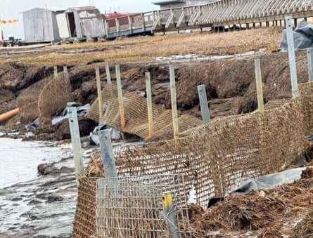
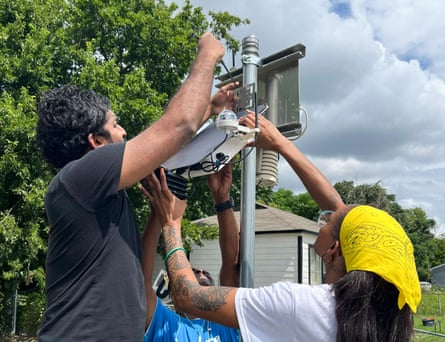

This story was originally published by Floodlight
Acre by acre, the village of Kipnuk is falling into the river.
The small Alaska tribal village sits on permafrost, which is thawing fast as global temperatures rise. That’s left the banks of the Kugkaktlik River unstable – and more likely to collapse when floods hit, as they often do. Buildings, boardwalks, wind turbines and other critical infrastructure are at risk, according to Rayna Paul, the village’s environmental director.
So when the village learned late last year that it had been awarded a $20m federal grant to protect the riverbank, tribal members breathed a sigh of relief.
But that relief was short-lived. On 2 May, the US Environmental Protection Agency canceled the grant. Without that help, Paul says, residents may be forced to relocate their village.
“In the future, so much land will be in the river,” Paul says.
Kipnuk’s grant was one of more than 600 that the EPA has canceled since Donald Trump took office, according to data obtained by Floodlight through a Freedom of Information Act request. Through 15 May, the cuts totalled more than $2.7bn.
The Alaska village of Kipnuk had been planning to use a $20m Environmental Protection Agency grant to build a rock retaining wall to prevent the rapid erosion along the banks of the Kugkaktlik River. But the cancellation of that grant leaves the village’s future in doubt.Photograph: Native Village of Kipnuk
Floodlight’s analysis of the data shows:
- Environmental justice grants took by far the biggest hit, with more than $2.4bn in funding wiped out.
- The EPA has also canceled more than $120m in grants aimed at reducing the carbon footprint of cement, concrete and other construction materials. Floodlight reported in April that the cement industry’s carbon emissions rival those of some major countries – and that efforts to decarbonize the industry have lost momentum under the Trump administration.
- Blue states bore the brunt. Those states lost nearly $1.6bn in grant money – or about 57% of the funding cuts.
- The single largest grant canceled: A $95m award to the Research Triangle Institute, a North Carolina-based scientific research organization that had planned to distribute the money to underserved communities. RTI also lost five other EPA grants, totaling more than $36m.
The EPA plans to cut even more grants, with the Washington Post reporting in late April on a court filing that showed it had targeted 781 grants issued under Biden.
The FOIA shows that the majority of these have now been canceled; more cuts could follow.
Lawsuit challenges grant cancellations
Last month, a coalition of nonprofits, tribes and local governments sued the EPA , alleging the Trump administration broke the law by canceling environmental and climate justice grants that Congress had already funded.
“Terminating these grant programs caused widespread harm and disruption to on-the-ground projects that reduce pollution, increase community climate resilience and build community capacity to tackle environmental harms,” said Hana Vizcarra, a senior attorney at Earthjustice, one of the nonprofits that filed the lawsuit. “We won’t let this stand.”
The EPA declined to comment on the lawsuit. But in a written response to Floodlight, the agency said this about the grant cancellations: “The Biden-Harris Administration shouldn’t have forced their radical agenda of wasteful DEI programs and ‘environmental justice’ preferencing on the EPA’s core mission. The Trump EPA will continue to work with states, tribes, and communities to support projects that advance the agency’s core mission of protecting human health and the environment.”
Congress created the Environmental and Climate Justice Block Grant program in 2022 when it enacted the Inflation Reduction Act (IRA), Joe Biden’s landmark climate bill. The program was designed to help the disadvantaged communities that are often hit hardest by pollution and climate change.
But on 20 January, Trump’s first day back in office, he signed an executive order halting funding under the IRA, including money for environmental justice. Trump also cancelled Biden era executive orders that federal agencies prioritize tackling environmental racism, and separately in his orders on diversity, equity and inclusion called for the closures of all environmental justice offices and positions in the federal government.
Underserved communities are often the most vulnerable to climate impacts such as heatwaves and flooding because they have fewer resources to prepare or recover, according to a 2021 analysis by the EPA .
Inside the agency, not everyone agrees with the new direction. In a “declaration of dissent” , more than 200 current and former EPA employees spoke out against Trump administration policies, including the decision to dismantle the agency’s environmental justice program.
“Canceling environmental justice programs is not cutting waste; it is failing to serve the American people,” they wrote.
On Thursday, the EPA put 139 of the employees who signed the petition on administrative leave, Inside Climate News reported .
From hope to heartbreak in Texas
The people at Downwinders at Risk, a small Texas nonprofit that helps communities harmed by air pollution, thought they were finally getting a break.
Last year, they learned that the EPA had awarded them a $500,000 grant – enough to install nine new air quality monitors in working-class neighborhoods near asphalt shingle plants, a gas well and a fracking operation in the Dallas-Fort Worth area. The data would have helped residents avoid the worst air and plan their days around pollution spikes.
Lakitha Wijeratne, with the University of Texas at Dallas, left, and Alicia Kendrick, a community organizer with Downwinders at Risk, install air-monitoring equipment. Downwinders had been planning to use a $500,000 Environmental Protection Agency grant to install more air monitors in Dallas-area communities threatened by pollution. But that grant was canceled.Photograph: Downwinders at Risk
But on 1 May, the group’s three employees received the news they’d been dreading: Their grant had been canceled.
“It was a very bitter pill to swallow,” said Caleb Roberts, the group’s executive director.
He and his team had devoted more than 100 hours to the application and compliance process.
The nonprofit’s annual budget is just over $250,000, and the federal funding would have allowed the group to expand its reach after years of scraping by. They’d even paused fundraising for six months, confident the federal money was on the way.
“We feel like we’re at ground zero again,” Roberts said. “And that’s just very unfortunate.”
Floodlight is a nonprofit newsroom that investigates the powers stalling climate action